Del documento al producto ejecutable: seis modos en vivo, Ciudad C1–C2 y evidencia que se puede verificar en pantalla.
La última presentación cerró con tres condicionantes explícitos. Esta sesión muestra qué se resolvió, qué se construyó y qué sigue pendiente con nombre y fecha.
| O1 | Acta con 2+ clientes para cerrar el núcleo multijugador. |
| O4 | Repetir la verificación del tuner de mapas. |
| O6 | Carga, despliegue y aceptación en noviembre. |
Lo que ya estaba cerrado: O2 (17/17 armas), O3 (8/8 mapas) y O5 (0 regresiones). El valor ganado quedó registrado al 06/10: SPI 1.13 · CPI 1.04.
Cuatro bloques: las seis prácticas con sus capturas, la matriz de riesgos, la factibilidad y la demostración del avance actual.
| Criterio | Diapositivas |
|---|---|
| Presentación · 5 pts Datos generales y capturas de las prácticas | 1 · 4–6 |
| Matriz de riesgos · 10 pts Ocurridos, prospectivos y medidas | 7 · 8 · 9 |
| Factibilidad · 10 pts Tecnologías, costos e impactos | 10 · 11 |
| Penúltimo avance · 10 pts Demo en vivo: recorrido y Ciudad | 12 · 13 |
Regla que se mantiene: ningún objetivo sube a 100 % sin la evidencia que su propio indicador exige. El acta de 2+ clientes sigue pendiente.
Tres entregas tempranas que fijaron el alcance, las herramientas y la forma cliente-servidor. Cada una dejó un artefacto que hoy todavía se usa.
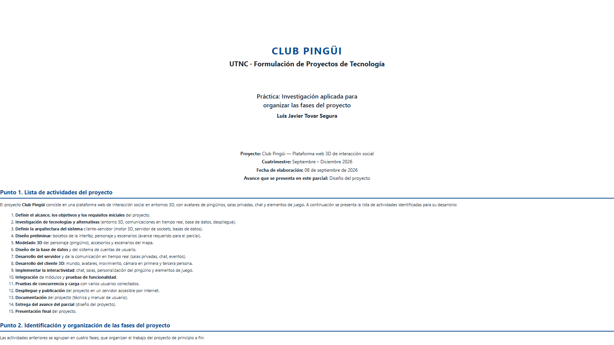
15 actividades en 4 fases con entregable por fase y línea base del 15/09/2026.
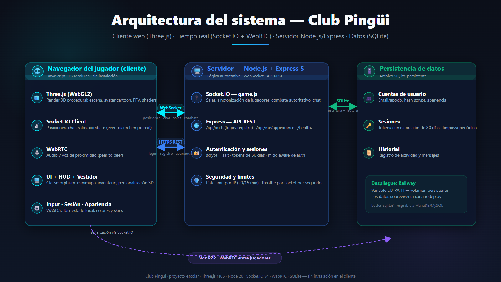
Se compararon motores 3D y se conservó Three.js: costo de migración cero frente a ~250 KB de lógica propia.
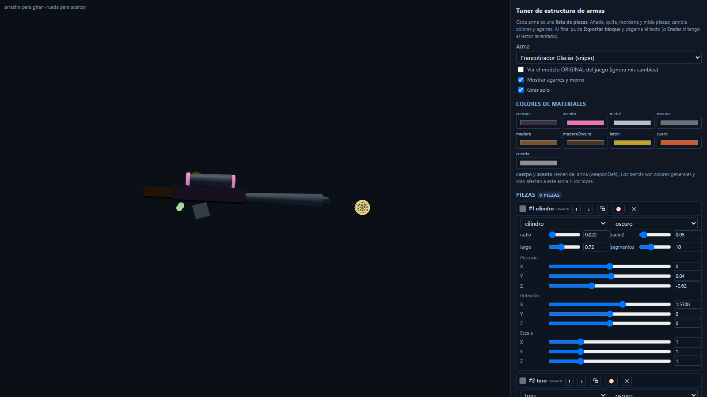
El tuner nació como decisión de diseño: editar 17 armas y exportar JSON sin tocar código.
Por qué importa hoy: la arquitectura permitió añadir seis modos como módulos de reglas sin reescribir el render, el chat ni la red.
Los objetivos se escribieron con indicadores verificables y la duración se estimó con tres valores, no con un número single.
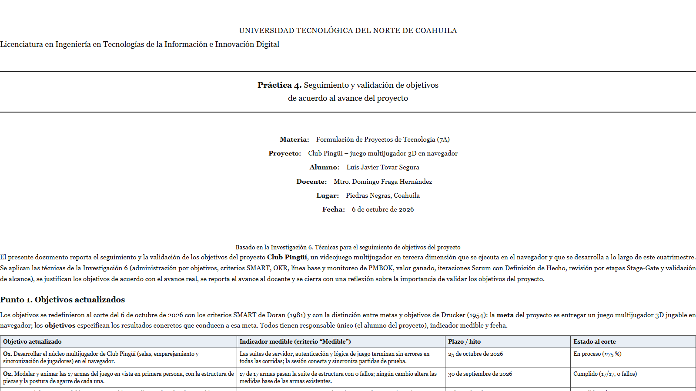
MBO, SMART, OKR, PMBOK, valor ganado y Stage-Gate aplicados. KPI: SPI 1.13 · CPI 1.04 al corte del 06/10.
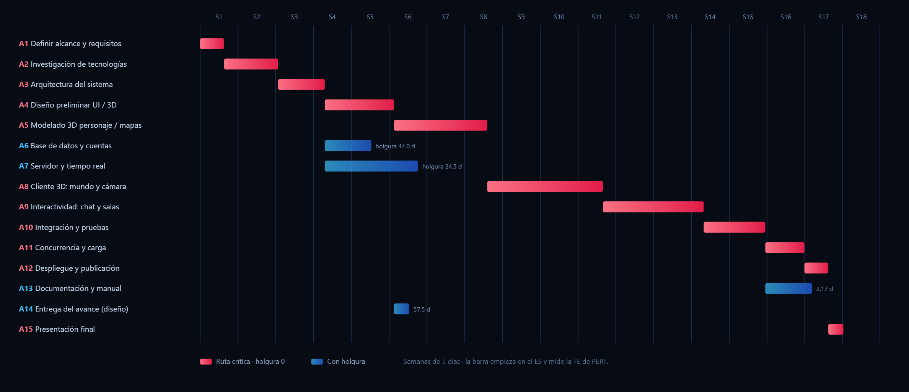
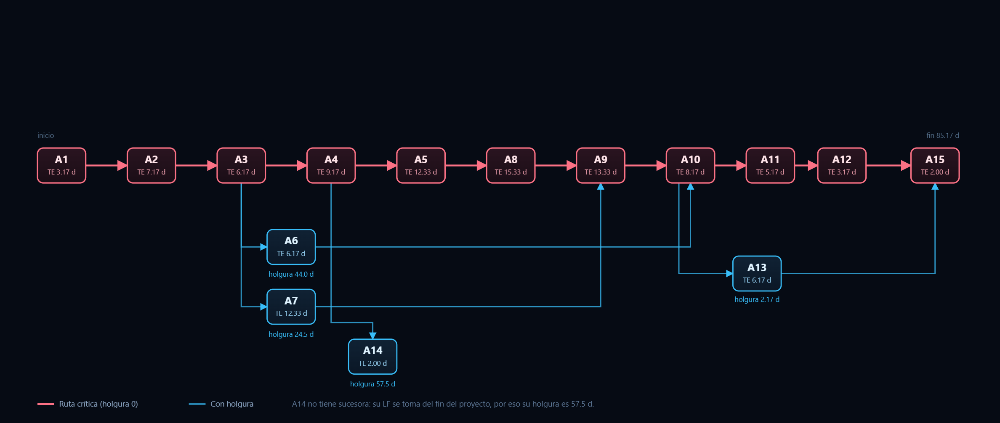
Ruta crítica de 85.17 días, sigma 4.02 y 88 % de probabilidad de cerrar en 90 días. A8 y A9 concentran la mayor varianza.
Qué cambió una decisión: el valor ganado sostuvo la fecha de O6; el Stage-Gate impidió declarar cerrados el acta de clientes y el tuner de mapas sin evidencia.
Presupuesto, esfuerzo y herramientas se derivaron del alcance aprobado; la distinción entre gasto y valor evita inflar la inversión real.
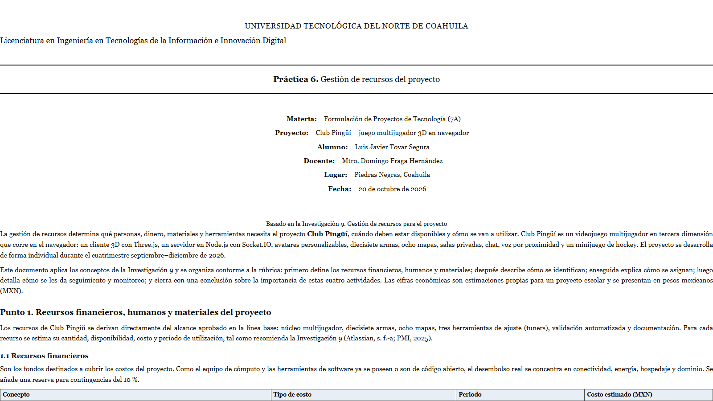
| Tipo | Detalle | Medida |
|---|---|---|
| Financieros | VPS, dominio, internet, energía y contingencia del 10 % | $3,025 |
| Valor total | Incluye el equipo de cómputo propio; suma valor, no gasto nuevo | $21,025 |
| Humanos | 95 h desarrollo · 35 h diseño 3D · 20 h calidad · 10 h documentación | 160 h |
| Materiales | Three.js, Socket.IO, SQLite, Node.js y Blender para los assets | MIT / Apache |
Control: la reserva de contingencia y las 160 h de línea base permitieron absorber la corrección de 15 defectos móviles sin cambiar el alcance del 23/11.
No se listan riesgos hipotéticos como si hubieran ocurrido. Estos cinco tienen evidencia en bitácora, reporte de carga o documentación.
| Riesgo ocurrido | Cuándo | Impacto | Corrección y evidencia |
|---|---|---|---|
| Error crítico en crystalTick | 28/09 · smoke de carga | Alto Variable en zona muerta (TDZ): cualquier cristal ofertado apagaba todo el servidor. | Renombrar la variable interna a tickNow (1 línea). Después: 60/60 bots y 0 excepciones. |
| 15 defectos visuales en móvil | 29–30/10 · auditoría | Alto Login cortado, joystick fuera de pantalla, HUD solapado e inventario no táctil en 7 viewports. | Corrección en CSS/JS y arnés mobilecheck.html: 0 solapes, botones 32–36 px e inputs de 16 px. |
| O1 sin acta formal | 27/10 → hoy | Medio La verificación individual no satisface el indicador de 2+ clientes; objetivo quedó en 95 %. | Se mantiene honesto: 60/60 admitidos y 0 disconnects, pero no hay acta en docs/. Pendiente para aceptación. |
| Tuner de mapas sin repetir | 27/10 → hoy | Medio O4 se reportó cumplido con reserva; no se podía cerrar sin repetir la prueba. | Se conserva la reserva y se agenda la reverificación; no se declara 100 % sin evidencia. |
| Chat y HUD encimados | 18/11 · BC-02/03 | Bajo El panel social tapaba el HUD y los controles táctiles durante la partida. | Menú ☰ arriba a la izquierda y chat como botón circular abajo a la izquierda; 0 errores en consola. |
Balance: 1 fallo crítico de servidor, 15 defectos de interfaz y 2 evidencias formales pendientes. Después de las correcciones: 14 suites en verde y 0 regresiones.
Escala 1–3 en ambas ejes. Nivel = probabilidad × impacto: ≥ 6 alto 4–5 medio ≤ 3 bajo. Se evalúa al cierre del 23/11.
| ID | Riesgo prospectivo | Prob. | Impacto | Nivel | Señal de detección temprana |
|---|---|---|---|---|---|
| R1 | Rendimiento de Ciudad con 30–50 avatares | 2 | 3 | 6 alto | FPS y RTT p95 en prueba de 30 bots + 2 humanos; etiquetas y animación de lejanos. |
| R2 | Techo de ~60 sesiones en un solo proceso Node | 2 | 3 | 6 alto | /healthz, RSS y game:full; la corrida plena ya mostró 73 reintentos. |
| R3 | Extender C3–C5 antes de la entrega final | 3 | 2 | 6 alto | Cambios de alcance posteriores al 23/11; revisión semanal del plan por olas. |
| R4 | Sin acta de 2+ clientes ni despliegue aceptado | 2 | 3 | 6 alto | Ausencia de acta en docs/; publicación y aceptación del 15/12 sin cerrar. |
| R5 | WebGL pesado en teléfonos de gama baja | 2 | 2 | 4 medio | Arnés de 7 viewports, FPS y mediciones de rectángulos en cada cambio de UI. |
| R6 | Regresión al integrar un modo nuevo | 1 | 3 | 3 medio | 14 suites en scripts/test-all.ps1 y smoke de cada commit. |
| R7 | Abuso de chat / falta de moderación al publicar | 1 | 3 | 3 medio | Filtro, límite de velocidad y reportes: hoy parcial, requiere seguimiento. |
Lectura: los cuatro riesgos altos concentran rendimiento, techo de sesiones, alcance y aceptación. Los tres medios se controlan con pruebas ya existentes.
Las medidas ya aplicadas se marcan en verde; las que dependen de noviembre y diciembre se dejan explícitas como pendientes.
| ID | Medida | Estado | Cuándo | Métrica de salida |
|---|---|---|---|---|
| R1 | Culling por celdas de 20 m, etiquetas solo a < 15 m, animación a 15 Hz para lejanos. | Aplicada en C1 | 20/11 | p95 < 200 ms con 30 bots + 2 humanos; nadie ve a más de 40 m. |
| R2 | Documentar el límite y preparar /city con namespaces o shard; no prometer más de lo medido. | En diseño | Dic–Feb | 60/60 admitidos hoy; RSS < 400 MB y 0 desconexiones. |
| R3 | Congelación de modos hasta el 23/11 y tag v0.2; C3–C5 después de la entrega final. | Aplicada | 18–23/11 | Alcance de hoy = C1–C2; sin cambios de alcance en el corte. |
| R4 | Reunir acta con 2+ clientes, publicar en Railway con DB_PATH en volumen y pedir aceptación. | Pendiente | 02–15/12 | Acta firmada en docs/ y /healthz respondiendo en público. |
| R5 | LOD / frustumCulled en decorado y medición con mobilecheck.html. | Aplicada | 30/10 | 0 solapes en 7 viewports y HUD de 243×59 en 640×360. |
| R6 | Ejecutar scripts/test-all.ps1 y smoke antes de cada entrega. | Aplicada | Continuo | 14 suites en verde, incluidas t-modos, t-tnt, t-karts y t-ciudad. |
| R7 | Filtro de chat, límite de velocidad, reportes y zonas seguras antes de abrir la plataforma. | Parcial | C5 | Sin mensajes ofensivos sin sanción en la prueba de aceptación. |
Responsable de seguimiento: Luis Javier Tovar Segura. Revisión semanal de los riesgos con nivel 6 hasta la aceptación del 15/12.
Cada tecnología se eligió por un costo de adopción medido y una evidencia en el proyecto. Lo que no se necesita hoy queda diferido, no descartado a ciegas.
| Tecnología | Por qué se seleccionó | Evidencia en el proyecto |
|---|---|---|
| Three.js 0.187 · MIT | Ya está integrado; mantenerlo cuesta cero y conserva ~250 KB de lógica propia de render, avatar y HUD. | 8 mapas, 6 arenas de modos y Ciudad en primera persona sobre el mismo renderer WebGL. |
| Node + Express + Socket.IO 4.8 | Un solo proceso cubre salas, chat, combate y modos; el tiempo real es el núcleo del producto. | 60 sesiones concurrentes, 619 eventos player:moved/s, RTT p95 132 ms. |
| SQLite · better-sqlite3 | Persistencia WAL sin servidor adicional; suficiente para cuentas, estadísticas y mundo social. | user_stats, city_collectibles, city_objects sobreviven al reinicio. |
| Contrato de modo | Reglas, tick y condición de victoria como módulos; evita un if gigante en game.js. | Seis modos live comparten red, HUD y movimiento; Coliseo habilita combate y Ciudad lo bloquea. |
| Rapier / Colyseus | Se adoptan solo si Karts o Ciudad lo exigen; hoy no justifican migrar el servidor. | Decisión diferida a los spikes documentados en la investigación de herramientas (18/11). |
Conclusión: la factibilidad técnica está demostrada para el alcance actual. El techo conocido (~60 sesiones por proceso) está documentado y tiene respuesta prevista, no improvisada.
La viabilidad no se afirma solo en lo técnico: también depende del dinero, del tiempo de una persona y del impacto real en el usuario y en la materia.
| Ámbito | Impacto | Justificación |
|---|---|---|
| Tecnológico | Producto jugable en navegador, sin instalación y con persistencia. | Stack ya probado; los modos se añaden como módulos y no obligan a migrar de motor. |
| Económico | Costo operativo bajo: hospedaje y dominio; el 86 % del valor es equipo propio. | No se requiere infraestructura cara para la demo académica; la contingencia del 10 % cubre correcciones. |
| Académico | Seis prácticas con entregable, bitácora de cambios y evidencia por objetivo. | La rúbrica se atiende con artefactos verificables: documentos, capturas, pruebas y demo. |
| Operativo | Un desarrollador asistido por IA sostiene el ritmo con hitos y gates. | Las 160 h y la definición de hecho permiten estimar; la congelación del 18–22/11 evita trabajo innecesario. |
| Social / usuario | Salas, chat, seis modos y un distrito social accesible desde escritorio y móvil. | 15 defectos táctiles corregidos y cámara en primera persona estricta en Ciudad para sostener la experiencia de rol. |
Veredicto: viable para la entrega del 02/12 con el alcance C1–C2. Casas, trabajos y moderación (C3–C5) quedan fuera del corte académico y se planifican después.
En vivo: iniciar sesión → vestidor → isla con anillo de portales → elegir modo → sala oculta MODO-<ID> → volver a la isla.
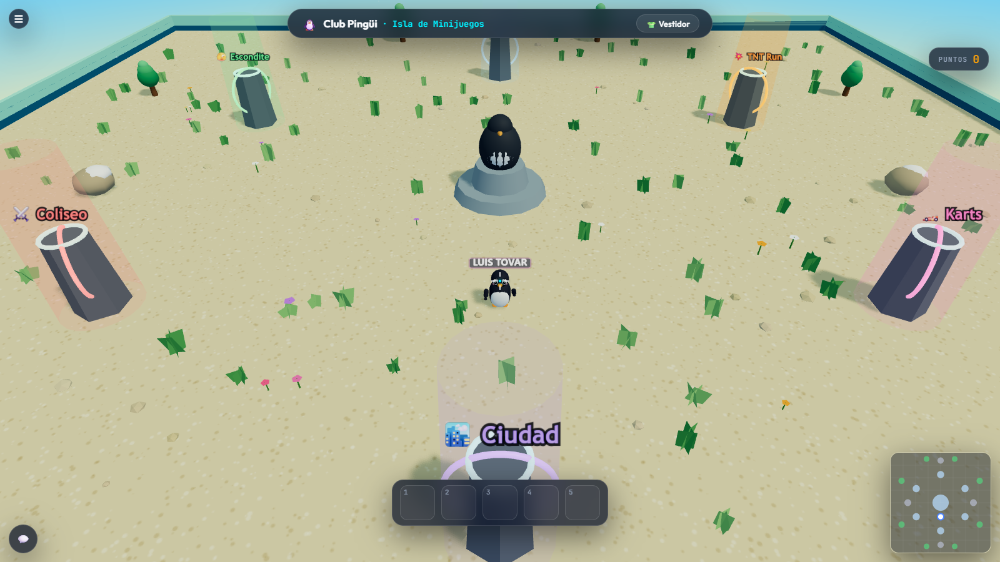
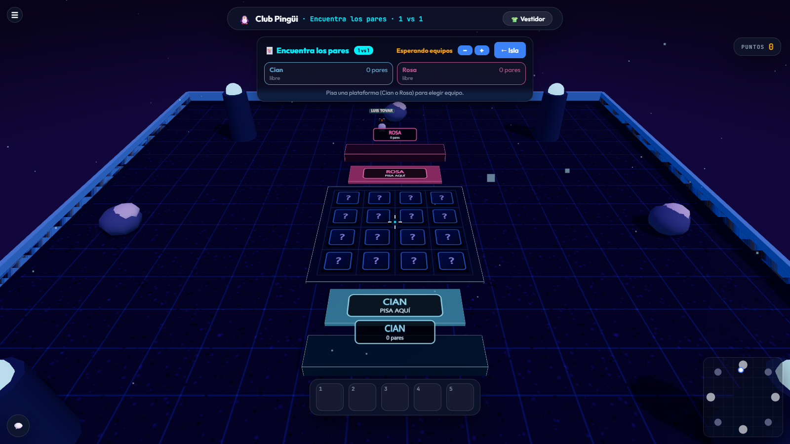
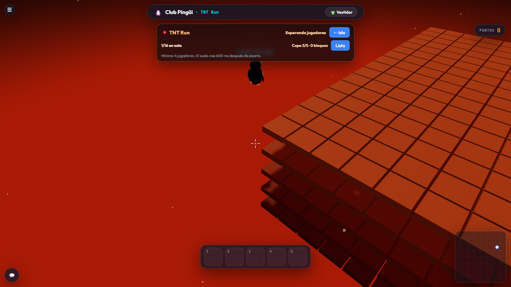
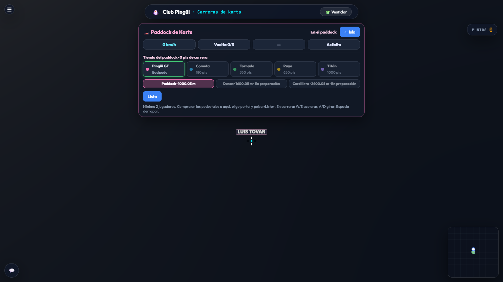
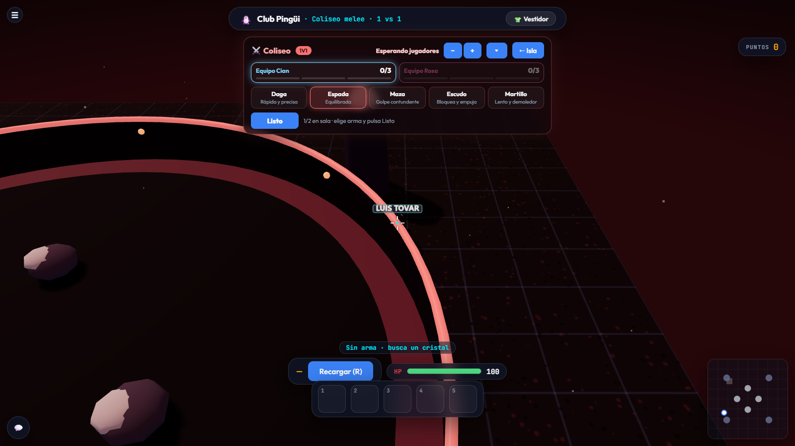
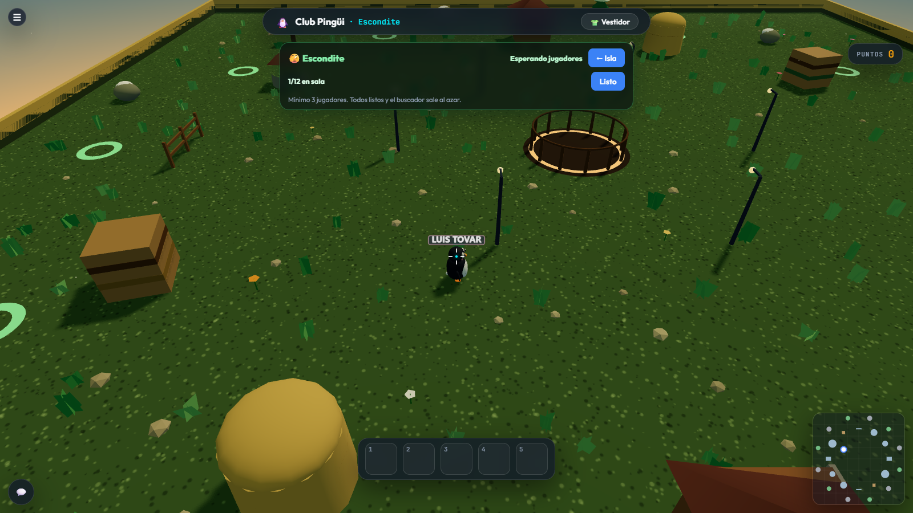
Qué mirar en la demo: los seis portales responden live; el combate solo se habilita en Coliseo; cada modo guarda sus estadísticas en user_stats al volver a la isla.
Cámara en primera persona bloqueada, distrito procedural, coleccionables persistentes, economía y gestión de interés por celdas.
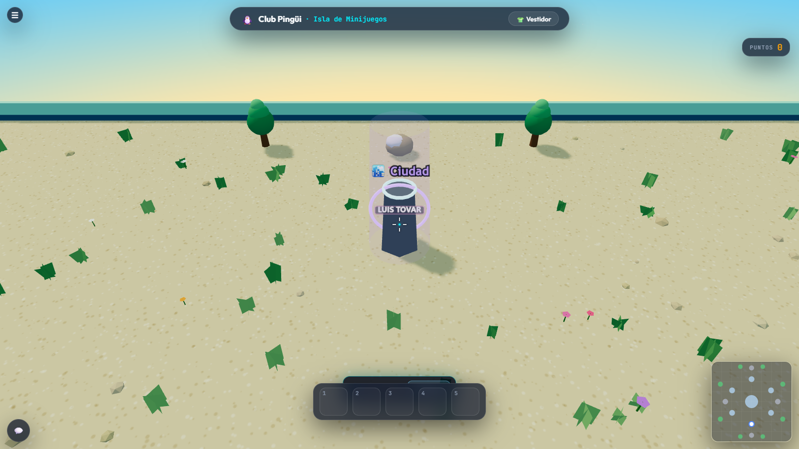
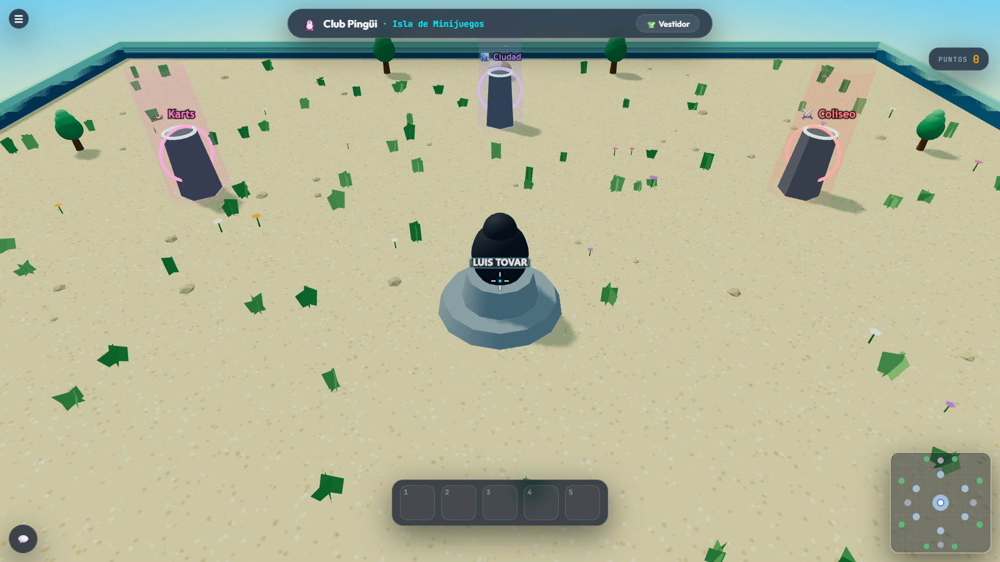
wallet.collected > 0 y compra ejecutada en la corrida de capturas.t-ciudad.mjs.Límite honesto: C1–C2 están cerradas. Parcelas, trabajos y moderación (C3–C5) no forman parte de esta versión estable.